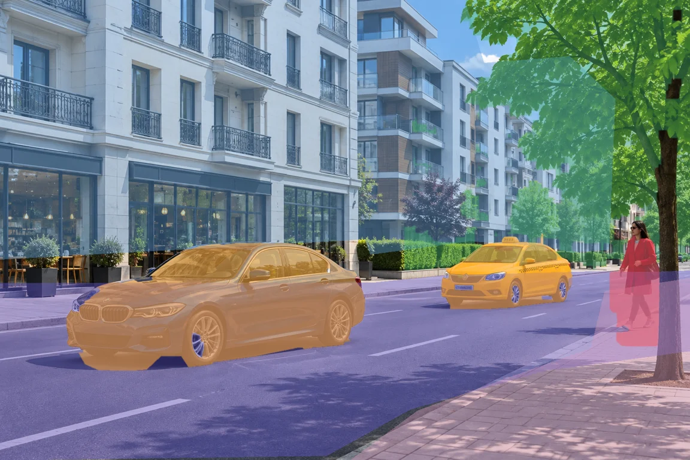
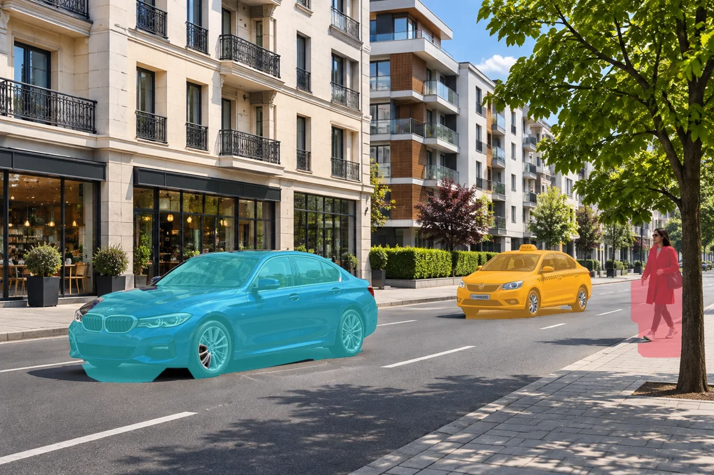
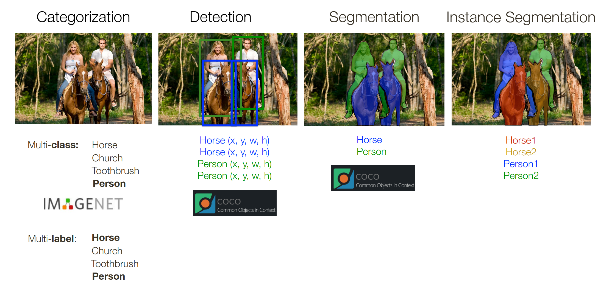
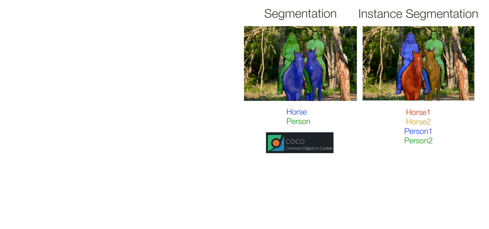
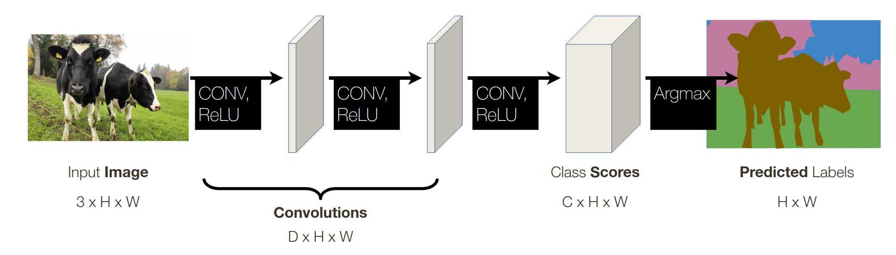
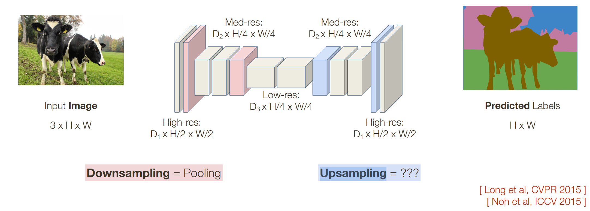

Classification
Which category describes the image?
(B, C)A rigorous perspective on image classification, detection and segmentation: mathematical representations, neural architectures, controlled experiments and Python + PyTorch implementations.
Explore applications ↓


For the same input, changing the problem formulation changes the architecture, label representation, loss function and evaluation metric.
THE SAME VISUAL DATA
We start with a scene containing two cars, a pedestrian, buildings, vegetation and road surfaces. Depending on the problem formulation, we choose a different output: image labels, boxes, per-pixel classes or instance identities.
Which category describes the image?
(B, C)Where are the objects and what are their classes?
boxes, labels, scoresWhich class does each pixel belong to?
(B, C, H, W)Which pixels belong to each instance?
N măști + clase + scoruriThe image below clearly illustrates the difference between classification, detection, semantic segmentation and instance segmentation.

The network returns logits, not probabilities. Softmax normalizes them, and cross-entropy penalizes insufficient probability assigned to the correct class.
Change the raw scores and temperature. Observe how the distribution changes without necessarily changing the winning class.
zk is the logit of class k; T is the temperature. When T → 0⁺, the distribution becomes more concentrated; when T increases, it becomes more uniform.
The formula on the right is for T = 1. In PyTorch,
nn.CrossEntropyLoss receives logits directly and internally computes log-softmax
+ NLL.
ResNet, EfficientNet or ViT extract visual representations.
ℝB×COne score per class; softmax is used for multiclass classification.
The choice depends on class imbalance and the cost of errors.
The same image can be used for different problems, depending on label type. Select a formulation and observe output shape, activation function, loss and final decision.
—
Classical CNN backbone, usually followed by global average pooling and a linear layer.
Image patches become tokens; the classification head produces class logits or independent scores.
Single-label classification chooses the highest-scoring class; multi-label classification applies individual thresholds, because several labels may be true simultaneously.


Explore numerically the operation used in Conv2d. In standard deep learning implementations, the operation is cross-correlation (the kernel is not flipped), although the layer is called convolutional.
Select a feature map cell to highlight the 3 × 3 window and compute the dot product.
Analogous for width. K = filter size, P = padding, D = dilation, S = stride.
The formula assumes a square kernel, groups=1 and bias enabled. For depthwise or grouped convolutions, the parameter count differs.
A detector may produce many overlapping hypotheses. The confidence threshold and Non-Maximum Suppression (NMS) determine which detections remain.
Regions, confidence scores and class distributions; several hypotheses may describe the same object.
Hypotheses with insufficient scores are removed; in practice there may also be top-K limits.
The highest-scoring detection is selected and detections with excessive overlap are removed, usually within the same class.
boxes[N,4], labels[N], scores[N];
N depends on the image and filtering.
Follow a detector's process: feature extraction, candidate generation, NMS selection and final objects. Step through manually or start the animation.
Compare four widely used detector families: YOLO, Faster R-CNN, DETR and Deformable DETR. For each, observe how predictions are generated, what post-processing is used and in which scenarios it is advantageous.
—


In semantic segmentation, the model produces class scores for each spatial position: (B,C,H,W). After argmax(dim=1) a label map is obtained (B,H,W).
Cross-entropy is computed for each pixel, then aggregated. For an ignored class, use ignore_index with a value that is not a valid class.
mIoU is the mean IoU across classes, according to the evaluation protocol. Classes absent from both masks must be handled explicitly (do not automatically assume IoU = 1).
Examples: U-Net combines features at different resolutions through skip connections; DeepLabV3 uses atrous convolution and multiscale pooling. Not every segmenter has a symmetric decoder.
Instance segmentation distinguishes individual objects; panoptic segmentation unifies both stuff (road, sky, buildings) regions and things with their own identities.
Educational simulation with predefined scores. Each query may predict a class/no-object and a mask; the example does not run a real model.
Region proposals → classification/box regression → mask head; the number of detections is limited by candidates and post-processing settings.
masks:
(N, 1, H, W)typical shape returned by Torchvision at inference; values are probabilitiesA fixed set Q of queries generates class and mask predictions; only some are used as final instances.
class:
(Q,C+1), masks: (Q,h,w)conceptual representation; exact details depend on the implementationbox_detections_per_img is an inference limit in a Mask R-CNN configuration.
(N,4)labels(N,)scores(N,)masks(N,1,H,W)
In Torchvision Mask R-CNN, each returned mask contains probabilities for that instance; a binary mask is obtained after applying a threshold (for example, masks >
0.5). For another model or library, the shape may differ.
Compare the original photograph directly with the output map. The masks follow the outlines of cars, a pedestrian, trees, road and buildings; we no longer use schematic blocks.
Input image · urban scene
In semantic segmentation, each pixel receives a class. Cars have the same class, without distinct identities.
Photorealistic scene generated for this material; the segmentation maps are illustrative teaching masks, not evaluated predictions from a real model. They illustrate the structure and interpretation of results.
Here we compare three complementary directions: U-Net / DeepLab for semantic segmentation, Mask R-CNN for instance segmentation, and Mask2Former / OneFormer for universal segmentation.
—
U-Net combines two seemingly contradictory objectives: semantic context by reducing resolution, and spatial precision by reconstructing it. The diagram shows an educational variant with three downsampling levels, padding to preserve dimensions and a 512 × 512 pixel input. Select any block or blue connection to learn exactly what operation it performs.
The original image is fed into the network and normalized
—
—
The left arm increases the receptive field, usually doubling the channels at each resolution reduction. The bottleneck aggregates semantic information. The right arm increases resolution and concatenates representations from the corresponding encoder levels. The result can preserve the context needed for classification and the fine boundaries needed to localize each pixel. Dimensions and channel counts in the diagram are illustrative; the original U-Net may use different padding details and numbers of levels.
DeepLabV3+ combines a encoder semantically rich encoder, a ASPP module for multiscale context and a decoder lightweight decoder that reintroduces local detail. Click the highlighted regions for explanations or go directly to the atrous convolution section.

In the encoder, DeepLab replaces some downsampling with dilated convolutions. This preserves better spatial resolution without sacrificing the receptive field.
The following section breaks the mechanism into steps: first the standard kernel, then dilation, effective receptive field, parallel use in ASPP and its final role in DeepLabV3+. You can change both the dilation rate, and the explanation step.
We start with a classical 3 × 3 convolution. The kernel reads nine adjacent positions and produces an output value for the center pixel.
Notice that the number of parameters remains unchanged: still 9 weights per input channel. Only the positions in the feature map that the kernel reads change.
In the backbone, dilated convolutions maintain better spatial resolution than a long sequence of pooling layers. ASPP exploits this very property by running several branches with different rates in parallel.



argmax.


A metric must be chosen according to the prediction unit: image-level class, detected object or pixel region.
The relationship between Dice and IoU is exact for the same two sets when the union is nonempty. For metrics averaged across classes/images, the transformation generally does not apply after averaging.
Detections are sorted by score; at an IoU threshold, TP/FP are determined and the precision–recall curve is constructed. AP summarizes this curve; the COCO protocol reports the mean over IoU thresholds from 0.50 to 0.95 in steps of 0.05 and across categories.
| Task | Recommended metrics | What not to omit |
|---|---|---|
| Classification | Accuracy, macro-F1, AUROC | Class imbalance and calibration |
| Detection | AP / mAP, object recall | IoU threshold, score, object size |
| Semantic segmentation | mIoU, per-class Dice | Absent classes, ignore_index, boundaries |
| Instance segmentation | Mask AP, mask IoU | Instance matching, false positives |
Augmentation, annotation and evaluation strategies can affect results more than choosing another architecture.
Separate train / validation / test; for medical data, avoid putting the same patient in different splits. For video, separate related sequences.
Flip/crop must also be applied to bounding boxes and masks. Brightness changes the image, not the geometric label.
Use the normalization, resizing and channel convention associated with the pretrained weights.
Report thresholds, resolution, hardware, latency, seed and library versions.
Near-duplicates or images of the same subject across train and test overestimate performance.
Camera, season, lighting, hospital or population may change the data distribution.
A score of 0.9 does not automatically guarantee a 90% correctness rate.
High AP may be insufficient if inference exceeds the time or memory budget.
Complete, commented examples that explain tensor shape, preprocessing and interpretation of results. The code uses the modern weights API from torchvision.
The operational requirement determines which annotations must be collected and which output must be trained.
The requirement is to identify each vehicle separately and estimate its position in the current frame.
Select the desired output type and application constraints. The material recommends a problem formulation, annotation type, model family and relevant metrics.
Objective: an image may simultaneously contain infiltrate, effusion, cardiomegaly etc. The natural formulation is multi-label.
Objective: road and sidewalk are stuffregions, while cars and pedestrians are things. For complete scene understanding, the appropriate formulation is panoptic.
14 conceptual questions at Year IV level: tensor shapes, loss functions, NMS, modern architectures, segmentation and experimental protocol.
Foundational papers, relevant documentation and starting points for further study of image classification, detection and segmentation.